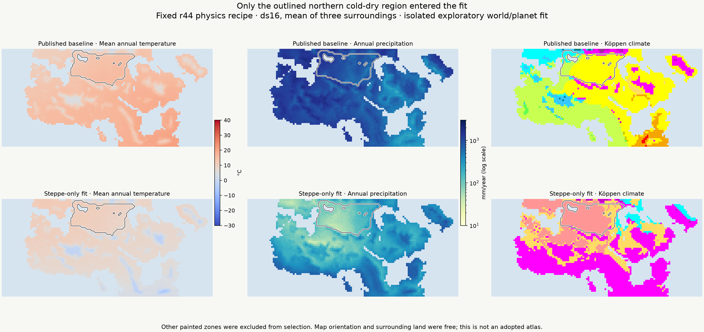
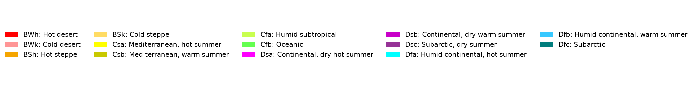
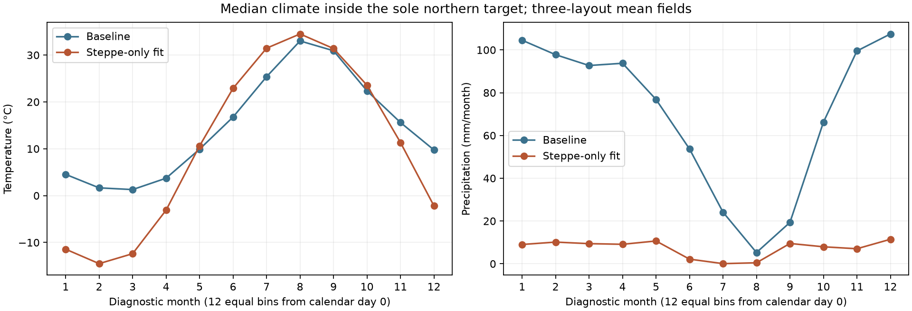
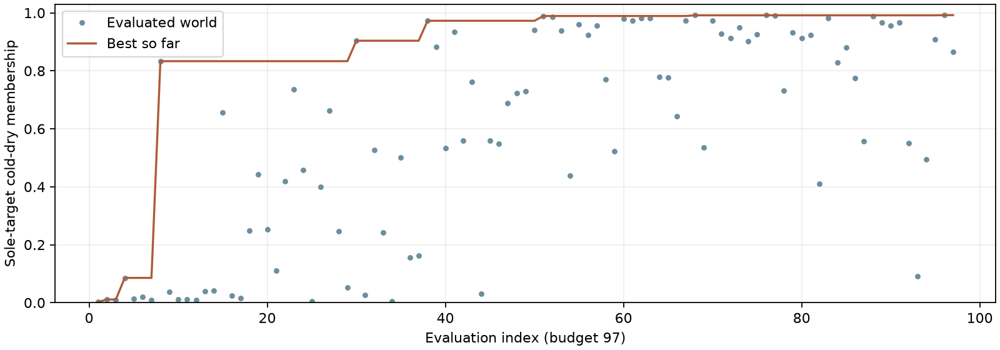

Only the outlined painted cold-dry zone entered the loss. All other target zones and global realism/spill penalties had zero weight. This is an exploratory fit, with no atlas adoption.
Fine-grid three-layout target membership: 0.0178 → 0.9622. Cold steppe (BSk): 0.0% → 16.9%; cold desert (BWk): 0.0% → 80.9%.


The existing cold-dry rule rewards cool annual temperature and aridity; it does not demand grassland or exclude desert. World north direction and surrounding land were free. The result is one bounded search outcome, not uniquely identified planetary facts.


Earth day, 365-day year, gravity, terrain and shared physical recipe stayed fixed. Radius uses the existing first-order world scaling. Latitude/orientation, surrounding land, EBM land scale and cross-equatorial transport were among the 19 free knobs. Download exact parameter table.
| Parameter | Baseline | Candidate | Units |
|---|---|---|---|
| lat_center | 38.51479630121221 | 39.83396310874253 | degrees N |
| tilt | 33.50473580006303 | 44.94112824342174 | degrees |
| retrograde | True | True | boolean |
| beyond_north_land | 0.5186348153077821 | 0.5893961527752318 | land fraction |
| beyond_south_land | 0.7228655804361942 | 0.9699112588446641 | land fraction |
| beyond_west_land | 0.3349345889221035 | 0.8078916406434242 | land fraction |
| beyond_east_land | 0.6789270534399199 | 0.7780777664453308 | land fraction |
| beyond_continuity_km | 687.708939189805 | 453.35230504124695 | km |
| beyond_relief_m | 175.99330159156224 | 358.5983595610592 | m |
| beyond_southeast_land | 0.454261923351162 | 0.28542329722733056 | land fraction |
| beyond_northeast_land | 0.008900208443513257 | 0.46156071306113444 | land fraction |
| north_bearing | -8.813737187253281 | 167.9662934327808 | degrees clockwise from map top |
| eccentricity | 0.0167 | 0.007932856725810154 | dimensionless |
| perihelion_after_solstice | 13.0 | 27.935088093569078 | days after winter solstice |
| solar_flux | 1.0 | 0.9651260548749973 | Earth flux multiple |
| cross_equatorial_transport | 1.1 | 0.3485249736122543 | existing model coefficient |
| greenhouse_wm2 | 0.0 | -0.11345244868351911 | W/m² |
| planet_radius | 1.0 | 0.8430256404119642 | Earth radii |
| ebm_land_scale | 1.0 | 1.1601525205880976 | existing EBM land-response factor |
97 coarse evaluations; selected candidate checked at ds16 with three surrounding-world layouts. The finer comparison did not reselect the winner. Neither native ds8 qualification nor Earth validation is claimed. Independent numerical review